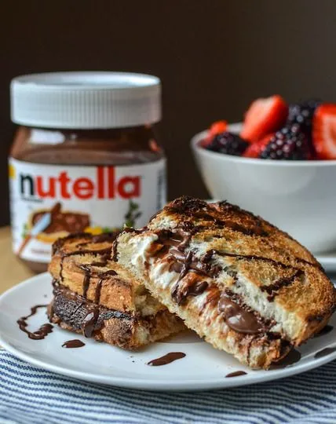

Nutella Sandwich

Description
A succulent italian delicacy disguised as an Australian Classic with berries, nutella and baked bread, this is a simple recipe that
I remember from my childhood
Ingredients
- Bread
- Nutella
- Various Berries
Cooking Directions
- Lay Bread Flat
- Spread a thick layer of nutella on both slices
- Mix the berries in where you like
- OPTIONAL: You can spread butter on the outside of the sindwhich and toast it all to make a thick decadent sandwhich